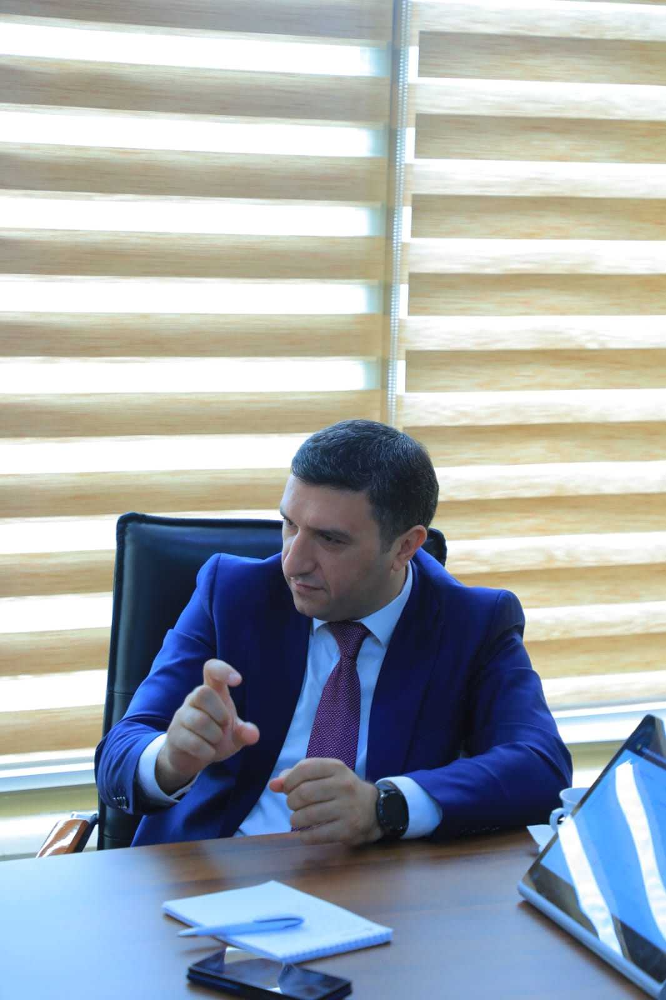
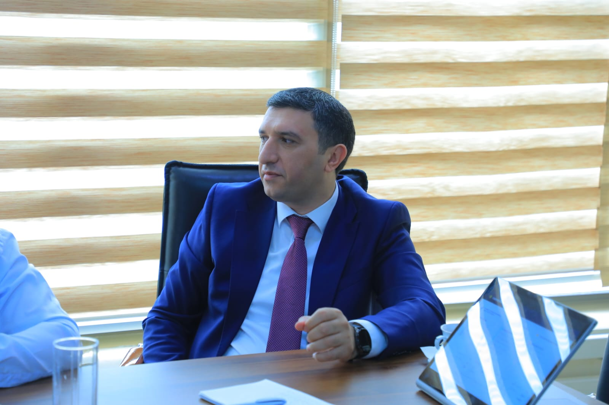
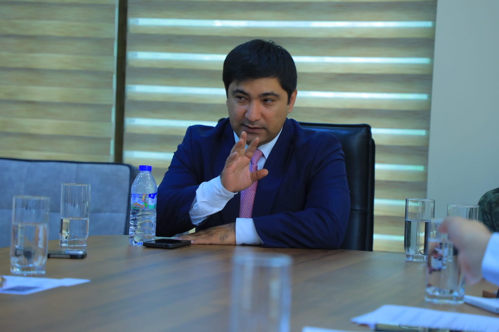
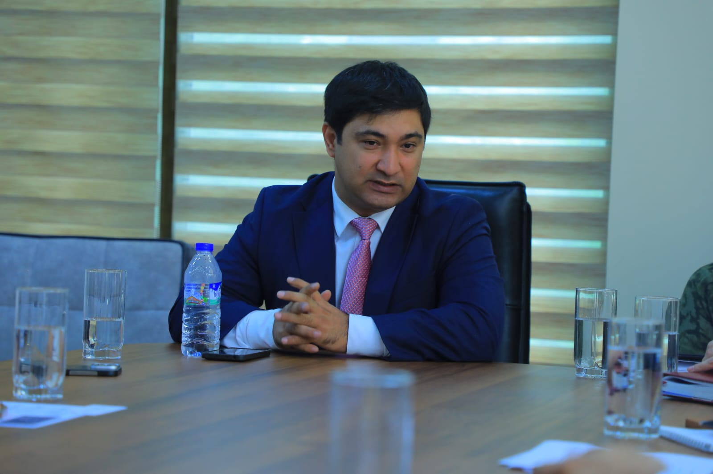

Ташкент, 08.06.2026 – В Ташкенте состоялась официальная деловая встреча между «ASR Distribution and Development Group» — одной из ведущих консалтинговых компаний — и руководством Ассоциации пищевой промышленности Узбекистана и компаниями-членами.
Основатель компании «ASR Distribution and Development Group» Эльхан Микаилов и генеральный директор Али Велиев лично приняли участие во встрече и провели обсуждения с официальной делегацией. Основными темами встречи стали масштабные реформы в сфере безопасности пищевых продуктов в стране, их влияние на местный пищевой бизнес, а также процессы адаптации предпринимателей к новым регуляторным требованиям.




В ходе обсуждений был проведён широкий анализ перехода к риск-ориентированной системе государственного надзора (risk-based inspection), внедрения международных стандартов (ISO 22000, HACCP и др.), а также административно-технических трудностей и новых возможностей для наращивания экспортного потенциала.
В рамках встречи основатель Эльхан Микаилов и генеральный директор Али Велиев представили членам ассоциации специальные механизмы поддержки и профессиональные консалтинговые услуги компании в направлении гибкой адаптации к реформам, «бизнес-диагностики», построения современных систем управления и укрепления институционального потенциала.
По итогам встречи стороны договорились о подписании Меморандума о взаимопонимании (MoU) в ближайшие дни с целью формализации взаимного сотрудничества и подготовки местных производителей и экспортёров к новым реформам.
В рамках данного стратегического партнёрства планируется проведение совместных диагностических программ для субъектов пищевой промышленности Узбекистана, управление практическими проектами адаптации и организация отраслевых тренингов. Профессиональная консалтинговая поддержка под непосредственным руководством «ASR Distribution and Development Group» позволит свести к минимуму риски местного пищевого бизнеса и ускорить его интеграцию на международные рынки.
Вернуться к новостям